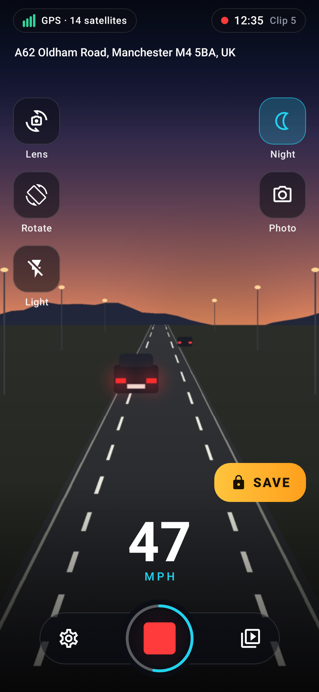
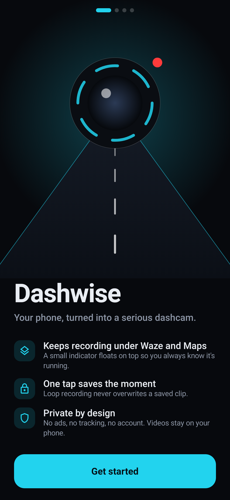
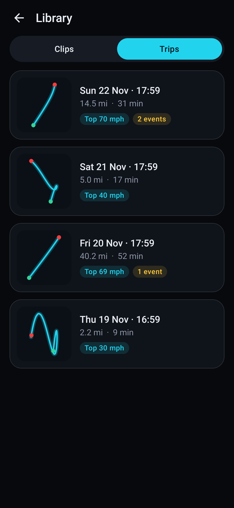
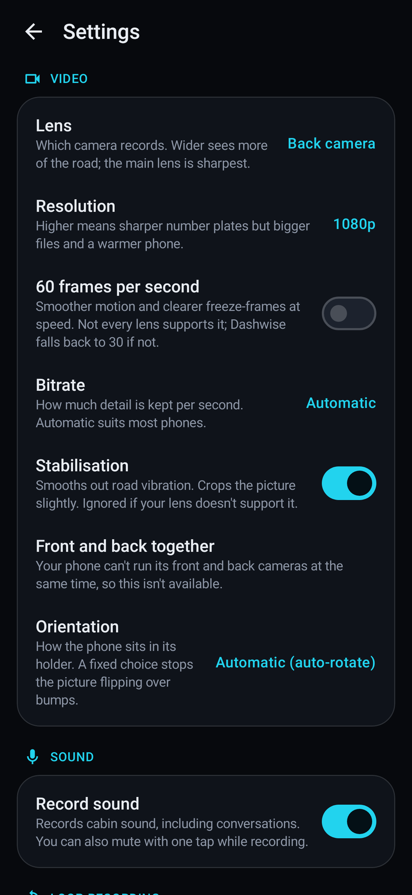
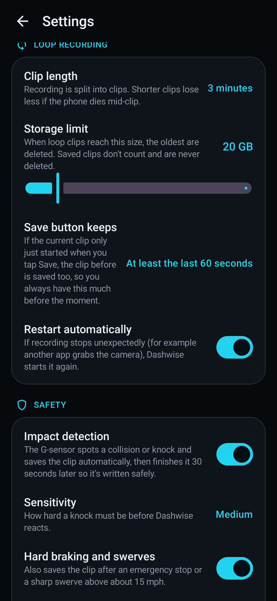
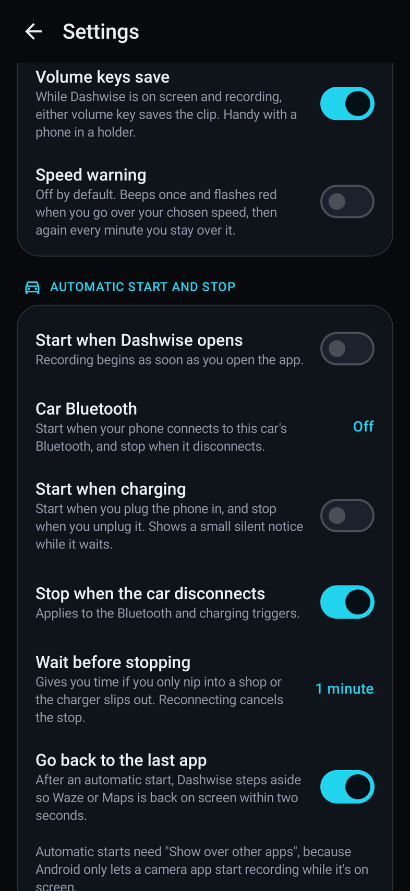
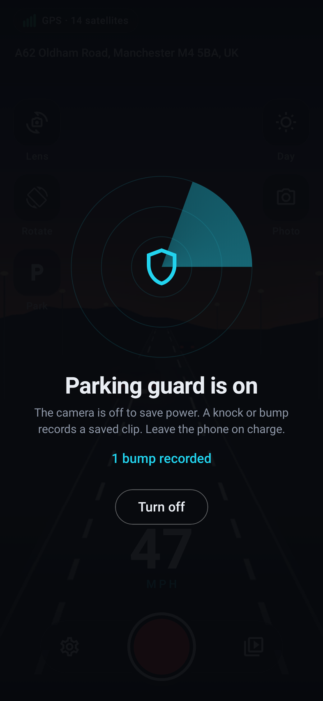

A serious dashcam. On the phone you already have.
Dashwise records the road while you use Waze, Maps or anything else, with a small indicator floating on top so you always know it's running. When something happens, one tap saves the moment, and a bump saves it for you.
It is free, with no adverts, no account and nothing to unlock. Your videos stay on your phone unless you choose to back them up to your own Google Drive.
Download for AndroidHow to install
- Version 1.2.0
- Android 10 or later
- 5.9 MB
Free, with nothing to unlock. No adverts, no account with the developer, no tracking. Compare or read the release notes.
Chrome may say the file might be harmful. It shows this for app files that do not come from Google Play. Choose Download anyway.

- No advertsNone in the app and none on this site.
- No accountOpen it, allow the camera and drive.
- Records behind WazeKeeps going with the screen off or the phone locked.
- Everything freeParking guard, two cameras, backup: no paid tier.
A look inside
These are the real Dashwise screens, drawn from the app itself with made-up drives. The road picture behind the camera screen is an illustration. Swipe or scroll sideways to see them all.






How it works
Mount the phone, open Dashwise and tap the red button. That's all it needs.
Set it up once
Allow the camera and location, then let Dashwise show over other apps and run without battery limits, so it keeps recording behind Waze.
Drive
Tap record, or let it start when your car's Bluetooth connects. Open Waze: a small red indicator floats on top while Dashwise records.
Keep what matters
Tap Save, the indicator's lock, or let a bump do it. Saved clips are kept; everything else is quietly recycled.
Everything is in, and all of it is free
Nothing below is held back for a paid tier, because there is no paid tier.
Recording you can rely on
- Records behind other apps
- Keeps going under Waze, Maps, music or the home screen, with the screen off or the phone locked.
- Loop recording
- Back-to-back clips of 1 to 10 minutes. When the storage limit is reached, the oldest loop clips go first. Saved clips are never touched.
- Restarts by itself
- If another app grabs the camera or recording stops unexpectedly, Dashwise starts it again.
Saves the moment
- One-tap Save
- Keeps the current clip and, if it only just started, the one before, so the lead-up is always there.
- Impact and hard braking
- The G-sensor saves the clip after a knock, an emergency stop or a sharp swerve, then finishes it 30 seconds later so it's written safely.
- Save from anywhere
- The floating indicator, the notification, the volume keys, a home-screen widget and a quick-settings tile.
Information on the video
- Burned into the picture
- Date and time, speed, street address, coordinates and your own text, such as your number plate, upright whichever way the phone is mounted.
- Every lens
- Each camera the phone offers, with its angle of view, from ultra wide to telephoto. Up to 4K, 60 fps and stabilisation where the phone supports them.
- Front and back together
- On phones that can run both cameras at once, the cabin appears in a small window in the corner of the road video.
Trips and evidence
- A journal of every drive
- Route on a map coloured by speed, distance, time, average and top speed, a speed graph and the events along the way.
- A map that follows the video
- When a clip plays, a small map shows where the car was at that moment, with its speed.
- Evidence pack
- A two-page PDF for an insurer or the police: time, place, speed, route, key frames and a SHA-256 check code for the video.
Quick editor
- Trim, mute, hide
- Cut a clip to the part that matters, remove the sound, and pixelate a number plate or a face. The original is kept.
Automatic, and kind to your phone
- Starts and stops itself
- When the car's Bluetooth connects or the phone is plugged in, and stops after a delay you choose when you leave.
- Heat and battery protection
- Lowers quality and dims the screen when the phone gets hot, and stops cleanly before the battery dies so the last clip isn't lost.
- Parking guard
- Optional: with the phone on charge in the parked car, the camera stays off until a bump starts a saved recording.
Private by design
- No account, no tracking
- No adverts, analytics or advertising ID. The developer receives nothing.
- Your videos stay yours
- Clips are stored in your phone's Movies/Dashwise folder. Backup to your own Google Drive is off until you turn it on.
Your drives, not your data
No account, no tracking
No sign-up, adverts, analytics or advertising ID. The developer receives nothing.
Videos stay on the phone
In your gallery under Movies/Dashwise. Drive backup is optional and goes to your own account.
Routes stay on the phone
Only the map pictures are downloaded. Your trips are never uploaded.
Installing and updating
Dashwise is not on Google Play, so your phone asks a couple of extra questions the first time.
Download the app file
Tap Download on your phone. The file is called Dashwise.apk and is about 5.9 MB. If Chrome says the file might be harmful, choose Download anyway.
Allow the install
Open the file. The first time, Android asks you to allow your browser to install apps. Allow it, go back and tap Install. If Google Play Protect steps in, choose More details, then Install anyway.
Updating later
Dashwise checks once a day whether a newer version is out and shows a note with a link to this page. Install the new file over the old one and your clips, trips and settings are kept.
Version 1.2.0, released 22 November 2026. See the release notes, or check your download.
Questions
Is Dashwise really free?
Yes. There is no paid version, no subscription and no adverts. Parking guard, front-and-back recording and Drive backup are all included.
Is it on Google Play?
No. Dashwise is a personal project and is downloaded from this site as an Android app file. It needs Android 10 or later.
Will it keep recording when I open Waze?
Yes. Recording runs in the background with a notification, and a small indicator floats over Waze so you can see it's running and save a clip without switching back. Allow "Show over other apps" and set Dashwise's battery use to Unrestricted, which the setup walks you through.
How much space does it use?
You choose a limit, 20 GB to start with. When loop clips reach it, the oldest are deleted. A 3-minute 1080p clip is roughly 250 MB. Saved clips don't count towards the limit and are never deleted automatically.
Where are my videos?
In your phone's gallery: Movies/Dashwise/Loop for rolling clips and Movies/Dashwise/Saved for clips you or a bump saved. Photos are in Pictures/Dashwise.
Can it start by itself?
Yes. Pick your car's Bluetooth, or choose Start when charging, and Dashwise starts recording, then hands you back to Waze. Android only lets a camera app start recording while it's on screen, which is why it appears for a moment.
Does it use mobile data?
Only for map pictures in the trip journal, the street address lookup and the daily update check. Drive backup, if you turn it on, waits for Wi-Fi unless you say otherwise.
What is the evidence pack?
A two-page PDF you can send with a clip: when and where, the speed, the route, six key frames and anything Dashwise detected, plus a SHA-256 check code that shows the video hasn't been changed.
Is the speed shown exactly right?
It comes from GPS, which is usually within a mile or two an hour on open roads, but can be wrong in tunnels, cities and at low speed. It is a record, not a calibrated speedometer.
Should I touch it while driving?
No. Set it up before you set off and mount the phone in a holder. The Save button, volume keys and automatic bump saves are there so you don't need to look at or hold the phone.
Who made it?
Dashwise is made by Jonathan Jackson, an independent developer in the United Kingdom.
Drive. Dashwise has it covered.
Free, with no adverts and nothing to unlock. Made by the developer of several other free Android apps: see them all.